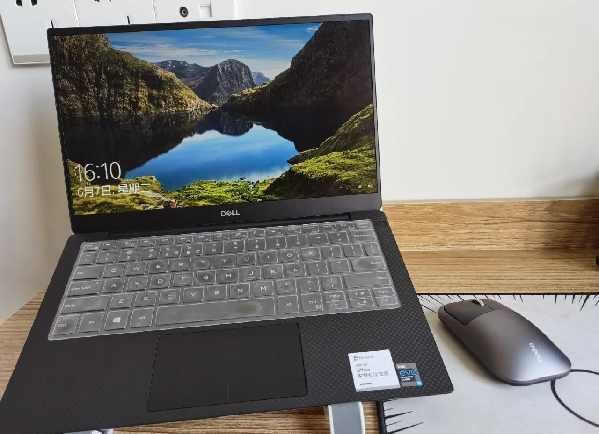

戴尔 XPS 13（2015）

微边框设计的开创者，Windows 阵营的精致轻薄标杆。
客观评测
XPS 13（9343）用微边框设计把 13.3 英寸屏塞进 11 英寸机身，FHD 版仅 1.18kg。i5-5200U 配 HD 5500 核显、8GB 内存与 128GB SSD，实测办公与多标签浏览流畅，52Wh 电池可支撑约 9-11 小时轻度使用。键盘键程偏短但触控板精准，接口含双 USB 3.0 与 Mini DisplayPort，是 Windows 阵营最有说服力的超极本。
主观点评
它是 Windows 阵营第一次在'精致感'上真正让 MacBook 紧张的产品。窄边框带来的视觉冲击至今不过时，1.18kg 塞进背包毫无存在感，出差一整天不用带充电器的安心感非常实在。键盘手感比不上 ThinkPad，低配屏幕色域一般，这些妥协换来了续航与价格的平衡。对想要一台'打开就干活'的轻薄本的用户而言，XPS 13 2015 是那个年代最稳妥的答案之一。
优点与不足
- 微边框让 13.3 英寸屏装进 11 英寸机身
- 1.18kg 重量与超长续航适合全天出差
- 触控板宽大精准，整机做工扎实
- 键盘键程偏短，长时间打字手感一般
- 屏幕低配版色域普通
- 前置摄像头位于屏幕下方，视频通话角度尴尬
参数规格
| 处理器 | 英特尔 Core i5-5200U（2.2GHz，双核四线程） |
|---|---|
| 显卡 | 英特尔 HD Graphics 5500 核芯显卡 |
| 内存 | 8GB DDR3L 1600MHz（板载） |
| 存储 | 128GB SSD |
| 屏幕 | 13.3 英寸 IPS 微边框屏，1920×1080 |
| 电池 | 52Wh 锂聚合物，约 11 小时轻度使用 |
| 接口 | 2×USB 3.0、Mini DisplayPort、SD 读卡器、耳机孔 |
| 厚度 | 9-15mm |
| 重量 | 1.18kg |
| 系统 | Windows 8.1（可升级 Windows 10） |